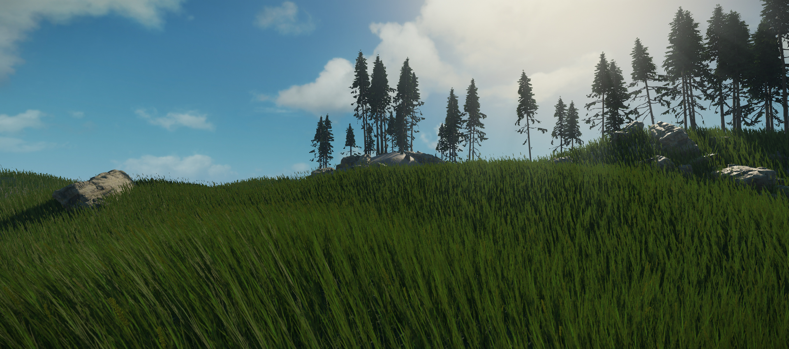
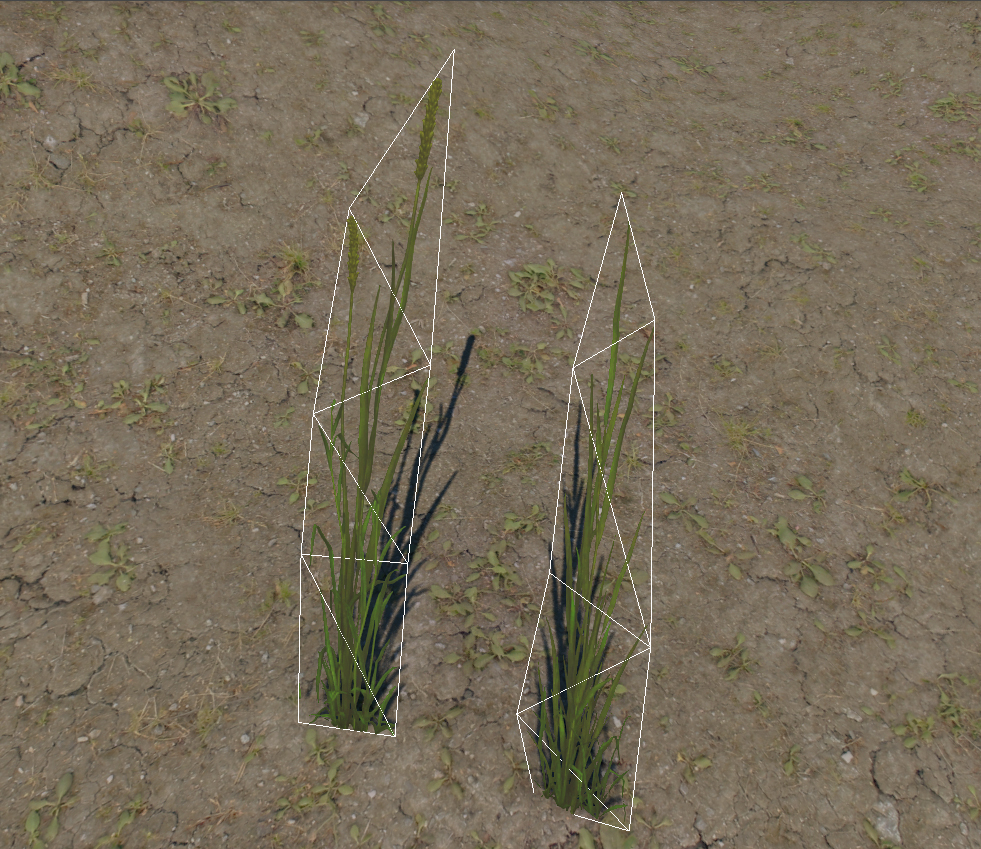
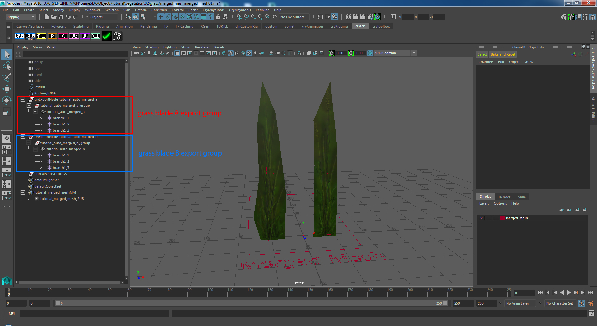
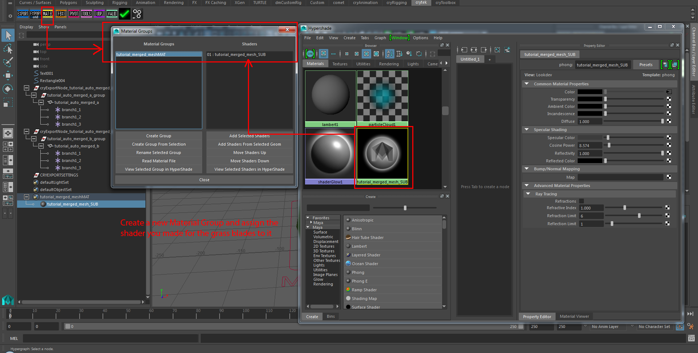
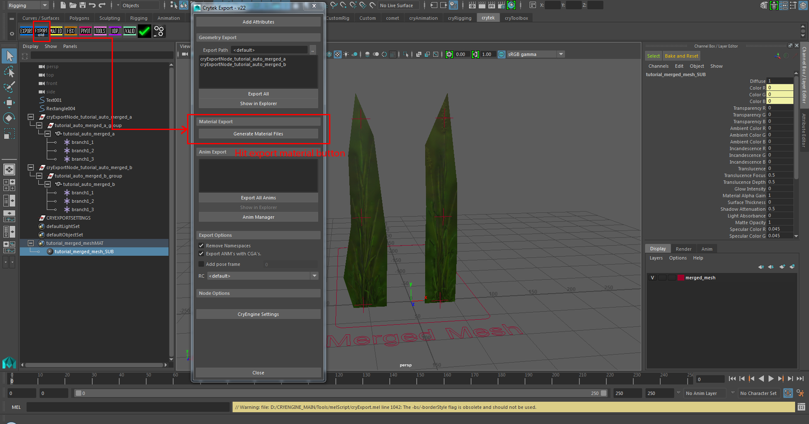
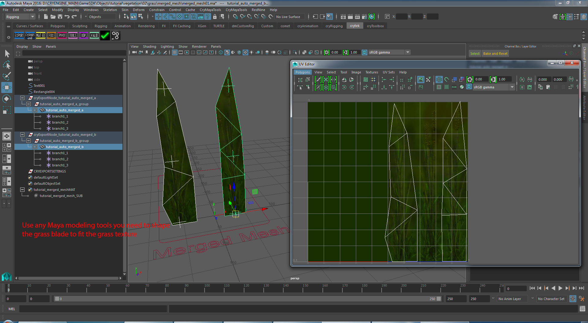
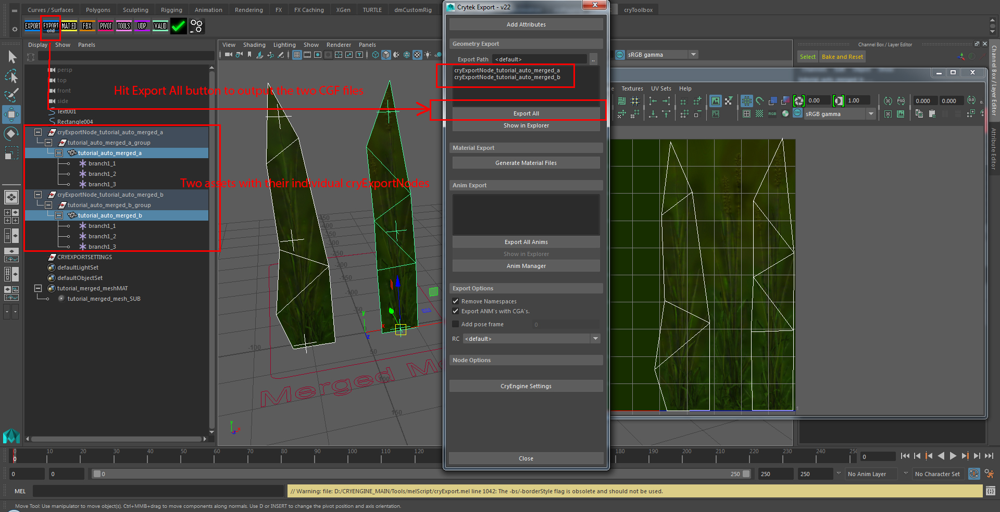

Обзор
В этом уроке мы будем использовать нашу систему объединенной сетки и покажем вам процесс настройки гибких травинок. Объединенные сетки в основном используются для обработки областей с густым количеством объектов растительности, таких как большие поля с травой. Объединенные сетки также позволяют использовать эффект изгиба на основе веревки. Для каждого экземпляра актива генерируются веревки, которые сгибают его при ударе.
В отличие от установок, основанных на костях, таких как Touch Bending, веревки могут быть дешевле и подвергаться воздействию глобального ветра и нашей системы генерации бриза. Большие поля травы являются прекрасным примером для демонстрации этого типа технологии, поскольку каждый экземпляр актива может быть объединен в более крупные кластеры с помощью системы объединенной сетки. Итак, в этом уроке мы создадим два простых ресурса плоскости травы в качестве основы для густо заросшего травяного поля.

Рис. 1: Поле с густой травой, подверженное воздействию ветра.

Рис.2: Два актива, которые содержит все это травяное поле.
Учебные файлы
Исходная сцена Maya с экспортированными файлами CRYENGINE:
Предварительные требования для этого урока
Прежде чем продолжить изучение этого руководства, убедитесь, что вы прочитали и поняли следующее:
Полезная информация
При работе над активами обязательно помните о следующих вещах:
- Выровняйте локаторы по геометрической поверхности; привязка к отдельным вершинам не требуется, эти локаторы являются опорными точками для CRYENGINE для создания линейного сплайна, который он использует для изгиба травинок.
- Три локатора должны следовать правилам соглашения об именах, чтобы Merged Mesh мог их распознать: "branch1_1" (внизу), "branch1_2" (в середине) и "branch1_3" (вверху).
- Используйте Локальный масштаб атрибут в узле формы вашего локатора, если вы хотите изменить размер их отображения.
- Полезно сохранять как можно меньшее количество различных материалов для объединенных сеток, чтобы снизить потребление памяти консольными системами. Используйте один большой лист текстур, содержащий несколько вариантов.
- Сохраняйте геометрию простой и плоской.
- Прокси-серверы коллизий не нужны, поэтому не создавайте собственные.
- Травинки должны быть как можно более низкополигональными для консолей, чтобы гарантировать, что им не придется передавать и объединять большие объемы данных сетки. Вы также можете отключить для них цвета вершин при экспорте, чтобы еще больше уменьшить размер.
- Вам не нужно создавать LOD для активов, использующих эту систему. Технология Merged Meshes объединяет растительность в 16-метровые ячейки, которые сами определяют уровень детализации, удаляя элементы по мере удаления камеры от «сектора».
В объединенных сетках есть некоторые улучшения, но есть и некоторые недостающие функции по сравнению с Touch Bending. В этой таблице представлен обзор различий между этими двумя системами. Используйте это, чтобы решить, какой тип функции лучше всего подходит для вашего актива.
Описание | Объединенная сетка | Сенсорный изгиб |
|---|---|---|
| Тип гибки | Веревки | Кости |
| Объединение экземпляров в кластеры | Да | Нет |
| Под влиянием ветра | Да | Нет |
| Под влиянием гена Breeze | Да | Нет |
| Требуется упрощенная геометрия (малое количество полигонов) | Нет | Да |
| Поддержка родителей в области костей | Нет | Да |
| Поддержка прокси | Нет | Да |
| UV создание экземпляров костей | Нет | Да |
Первоначальная настройка Maya
В этом уроке мы будем создавать наш ресурс в следующем каталоге.
<Your_Project>\Assets\Objects\tutorial\vegetation\02\grass\merged_mesh\
Итак, для начала сохраните сцену Maya в этом месте. Все наши экспортированные активы будут сохранены там. Некоторые текстуры, которые мы будем использовать, взяты из уже существующих ресурсов, и мы укажем вам каталог, где они находятся позже в уроке.
Мы продолжим исходить из предположения, что вы уже создали актив, поскольку это не учебник по моделированию Maya. Мы начнем с подготовки ресурса для CRYENGINE и настройки материала.

Рис.3: Это окончательная иерархия экспортируемых сцен.
Материал
Чтобы иметь экспортируемую сцену из Maya, вам необходимо указать геометрию под вашим cryExportNodes некоторыми материалами. Итак, создайте новый Группа материалов и один шейдер и назначьте шейдер этой группе материалов. Этот шейдер должен указывать на диффузную текстуру, которую вы хотите использовать для травинок. Используйте MAT.ED значок полки с установленной полки Crytek:

Рис.4: Установка новой группы материалов и добавление шейдера в эту группу материалов.
Экспортируйте материал
Экспортированный файл материала CRYENGINE должен находиться здесь:
<Your_Project>\Assets\Objects\tutorial\vegetation\02\grass\merged_mesh\tutorial_merged_meshMAT.mtl>

Рис5: Создайте стандартный материал для экспорта. Это будет завершено в редакторе материалов CRYENGINE позже.
Геометрия
Наша геометрия для этого урока будет представлять собой два участка травинок. Имейте в виду, что мы разместим несколько сотен тысяч экземпляров этих двух ресурсов по всей нашей сцене, поэтому следите за тем, чтобы количество треугольников было как можно меньшим.
Создайте сетки
Создайте одноплоскостную сетку для вашего первого участка травы, разделите форму на аналогичную многоугольную конфигурацию и примените к ней только что созданный материал (tutorial_merged_mesh_SUB). Выбрав геометрию травинки, откройте файл Maya. UV Редактор чтобы настроить его оболочку UV так, чтобы она помещалась только вокруг одного из участков травы на текстуре. Создайте копию своей сетки и переместите ее оболочку UV на другой участок травы.
Адаптируйте форму обеих сеток к примененным к ним текстурам. Наконец, назовите два объекта травы так:
- tutorial_merged_mesh_a
- tutorial_merged_mesh_b

Рис.6: геометрия травинок с UV-развертками, настроенными в соответствии с текстурой травы.
Добавление локаторов для изгибаемого сплайна
Как вы видели на изображениях ранее, у нас уже созданы несколько локаторов. Чтобы система растительности CRYENGINE видела ее как объединенную сетку и могла сгибаться под действием системы ветра окружающей среды, мы должны создать три Локаторы, который следует разместить один внизу, один в средней части и один вверху травинки. Их имена должны соответствовать этому соглашению:
- branch1_1 - нижний локатор
- branch1_2 - средний локатор
- branch1_3 - верхний локатор
В приведенных выше именах используется то же соглашение об именах, что и в системе Touch Bending, которая будет показана в следующем уроке по растительности.
Обратите внимание, что нам не нужно щелкнуть локаторы точно на вершину, как в установке сенсорного изгиба. Вы можете, если хотите, но это не требуется для системы объединенной сетки.
Экспортируйте геометрию
Как и при любом экспорте Maya в CRYENGINE, вам необходимо создать отдельный cryExportNode для каждого ресурса. Поскольку мы используем два варианта травинок, нам нужно создать два cryExportNodes. Переместите локаторы растительности Объединенной сетки под соответствующую родительскую геометрию, как показано здесь:

Рис.7: Экспортировать иерархию готовых сцен.
Продолжить CRYENGINE
Мы завершили настройку Maya части руководства. Чтобы продолжить, перейдите на следующую страницу, где мы настраиваем материал и используем инструмент «Растительность», чтобы разместить некоторые из этих активов объединенной сетки.